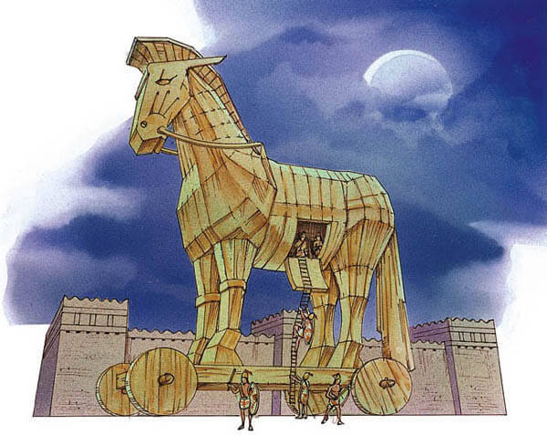

Trojan Horse's
What is a trojan virus
Trojan horses are a type of malware. They are designed to look like real software and trick the user into downloading it. Once its dowloaded on the compouter it can take control over your computer. Some of the things that can happen are:
- Deleting Data
- Blocking Data
- Modifying Data
- Copying Data
- Affect computers performance
- Stealing Data
How can trojans affect you
Trojans are classified based on the effects they can have on your computer and what they can do. Here are a few examples:
- Backdoor
Backdoor trojans give remote access to the infected computer. They author of the trojan can do anything they want on the infected computer. These are often used to create a botnet or zombie network.
- Exploit
Exploits take advantage of weak points in software that is running on your computer
- Rootkit
Rootkits are designed to hide objects or things that are running on your computer. There main use is to keep the malicious software from detected so it can run on the infected computer for a longer period of time
How to protect yourself
- Install an effective antivirus program that will help protect your computer
- Only download software form official sites
- Always keep your computer and software up to date
